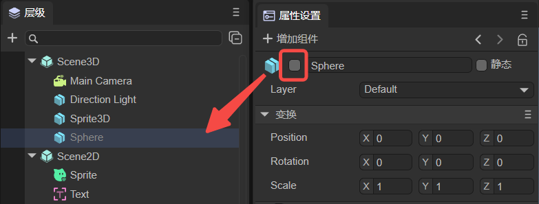

属性设置面板说明
一、通用功能
1.1 增加组件
在属性设置面板中，可以点击增加组件，来给节点添加对应的组件，如图1-1所示。

（图1-1）
- 3D节点可以增加的组件有：动画（时间轴动画、动画状态机）、3D物理、网格、特效（粒子、拖尾、像素线）、灯光、渲染（UI3D 、反射探针、体积全局照明、静态合批、LOD组）、自定义组件脚本、新建组件脚本。
- 2D节点可以增加的组件有：动画（时间轴动画、动画状态机）、2D物理、自定义组件脚本、新建组件脚本。
“自定义组件脚本”是添加已经存在的脚本文件；“新建组件脚本”是新建一个脚本文件。
1.2 上一个、下一个
如图1-2所示，点击<可以回到看过的上一个节点，点击>可以看到切换前看到的结点。

（图1-2）
1.3 锁定
如动图1-3所示，点击锁定可以锁定属性面板，切换结点时属性设置面板不切换。

（动图1-3）
二、应用场景
2.1 节点的属性设置
2.1.1 通用属性设置
1，激活
2D节点和3D节点都有激活功能，当取消勾选如图2-1所示选项后，该结点在层级面板会变灰，并且不激活父节点子节点会跟着被不激活。

（图2-1）
取消激活后，对于3D节点将不显示，即使运行时也不显示，如动图2-2所示。
（动图2-2）
但是，对于2D节点，取消激活后并不影响节点本身，只是不激活节点的脚本。例如动图2-3所示，使用脚本改变显示的文本，不激活后文本不会被改变。

（动图2-3）
2，重命名
可以按照如动图2-4所示的方式对节点进行重命名。

（动图2-4）
2.1.2 3D节点
静态：
在游戏场景中，每一个Sprite3D都有静态或者动态的两种状态，当一个物体标记为静态后，就确保这个物体在游戏场景中为静态的、不会移动的物体，进而在游戏的运行过程中让游戏有更加流畅的运行体验。详细的介绍请参考《使用3D精灵》的2.3节。
Layer：
蒙版层，渲染相机根据蒙版层可进行可视遮罩层的控制，对精灵的渲染与否进行控制。详细的介绍请参考《使用3D精灵》的2.4节。
Scene3D没有Layer属性。
2.1.3 2D节点
1，定义变量
勾选后，保存场景，就可以在UI运行时里面进行节点的管理了。详细的做法请参考《UI运行时》的2.3节。
Scene2D中没有定义变量属性。
2，Scene2D特有属性
- UI运行时：Runtime入口，详细内容请参考《UI运行时》。
- 使用设计宽高：勾选后，使用的就是
项目设置面板中设置的宽高；不勾选，可以自定义宽高。 - 预加载资源列表：可以添加一些需要预加载的资源。
2.1.4 预制体
当节点是预制体时，会有以下属性：
编辑：进入预制体的编辑页面。
定位：在项目资源面板中定位预制体资源文件。
覆盖属性：可以将修改覆盖到预制体中。
预制体的详细内容请参考《预制体模块》。
2.2 资源的属性设置
在资源面板中，点击以下资源类型的文件，可以在属性设置面板中，设置对应的属性。
- 图片：可以设置导入的图片属性，详细内容参考《项目资源面板说明》的1.4节。
- 位图字体：可以自定义位图字体，详细内容参考《文本进阶使用》的2.2节。
- 自动图集：发布后可以自动生成图集，详细内容参考《Web发布》的3.3.1节。
- 材质：可以创建自定义材质，详细内容参考《材质编辑模块》。
- 动画：有2D动画文件和3D动画文件，详细内容参考《时间轴动画编辑详解》。
- 光照贴图烘培：可以设置光照属性，详细内容参考《3D场景环境设置》的第六节。
- 第三方JS文件：提供了单独导入的功能，详细内容参考《引用第三方JS模块》的第二节。
- 模型：支持的模型后缀为fbx与gltf的模型文件，详细内容参考《模型与动画的导入使用》。
- RenderTexture：可以修改渲染纹理的属性，详细内容参考《混合使用3D》的第二节。
- AvatarMask：开发者可以用来设置动作遮罩，详细内容参考《动画状态机详解》3.5.1节。
2.3 代码预览
如图2-5所示，在src文件夹中选中脚本文件，就可以进行代码预览了。还可以在里面修改代码，完成后点击应用即可，但是建议开发者还是使用代码编辑器进行修改。

（图2-5）